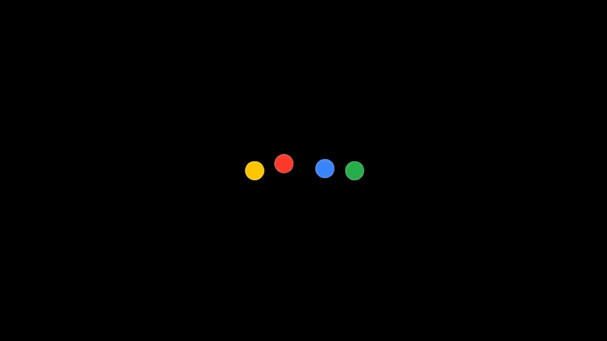
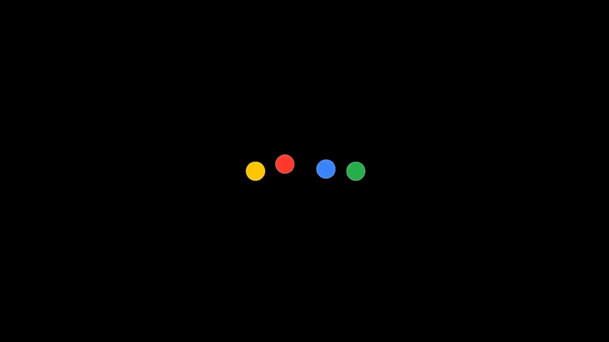
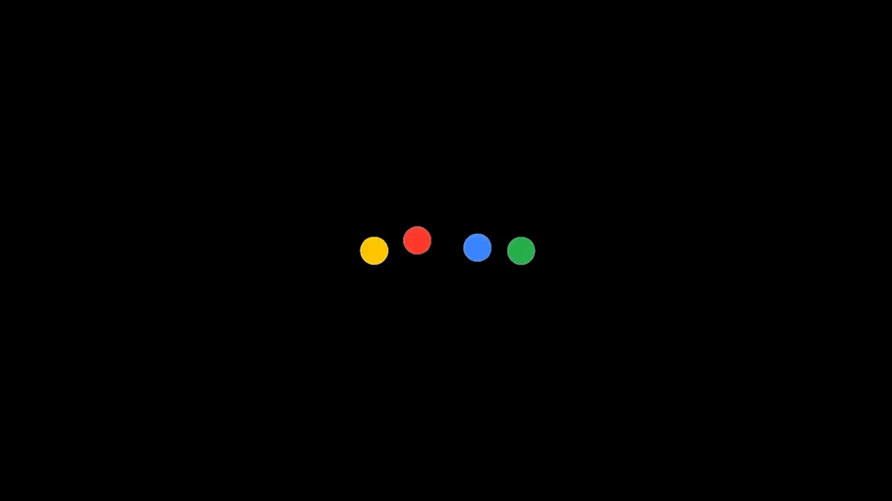

The biggest advantage of Android is that it is an open-source project, that allows for many developers to join the community. The Android developer community is quite big, with their biggest feat being the ability to develop custom ROMs or custom Android builds. A custom ROM is an aftermarket firmware production based on the Android source code provided by Google. The main reason why people prefer custom ROMs is the fact that almost every company drops support for their devices after 2 years of their launch. A custom ROM, on the other hand, helps keep your device alive and updated with the latest in the world of Android.
Another reason why people seek custom ROMs are the tons of features they offer, and that too without any bloatware that is part of manufacturer skins. While there are many custom ROMs out there to choose from, not all of them are stable enough to be used as your daily driver. So, if you’re someone who wants to install a custom ROM on their device but is confused about which one to go with, read on as we bring to you our list of best custom ROMs for Android that you can install.
Best Custom ROMs for Android in 2020
Note (skip if known): Installing a custom ROM requires the user to have an unlocked bootloader and a custom recovery like TWRP installed. Make sure to always create a backup before proceeding. While the download link for officially supported devices is mentioned below, some of these ROMs may have an unofficial port available for them as well. Also, on some ROMs, you may have to flash a GApps package such as OpenGapps. I have personally tried all the ROMs listed below on my MOTO-G5 PLUS, Readmi-2prime, Redmi 8A, Samsung S4 and hence curated the following list. Also, if you like the custom ROM, consider donating the developer behind the work.
1. Pixel Experience
Pixel Experience is the best custom ROM for Android right now and I can draw out three reasons for that. One that it has a huge list of device support from Xiaomi to Realme and Asus to Samsung. Second, it brings Pixel features on a range of supported devices like the newer Google Assistant, built-in GCam support, Pixel live wallpapers and more. Third, it has amazing stability among all the ROMs that I have tested for years. The main developer, Henrique Pereira, is not in a tearing hurry to port new Android versions to all the devices.

Instead, the developer picks a popular and developer-centric device and creates a base. After that, he publishes all the changes to GitHub for other maintainers to work upon. Not to mention,Pixel Experience has maintainers around the world who work round the clock to quell the bugs in a timely manner. So to put it straight, if you want stability and new features right from Pixel devices then Pixel Experience is the best custom ROM on Android, bar none.
2. Arrow OS
If minimalism is what you’re looking for then Arrow OS is right up your alley.I myself using this rom right now and its performance is out of box .Possibly the lightest and most functional custom ROM out there, the Arrow OS project is based on the AOSP code while adding useful tweaks to it. It’s very similar to the Pixel Experience ROM but brings additional features to the barebone feature list. The most notable features of the Arrow OS project are the inclusion of the Android 10 gesture navigation system, Recents in the overview menu and an option to choose the system accent color. The overview window shows the most used apps and a few other apps that you might use just like Pixel devices.
The customizable panel has a gesture replacement and that’s the 3-button navbar and it’s highly useful for users who want the old navigation system back. Other Arrow OS features include a custom dialer, custom Quick Settings tiles, lock screen shortcuts, Privacy Guard, and more. The Arrow OS project offers simple and minimalistic features that end up resulting in a clean and neat interface, that can further be customized if the user wants to.
3. lineage OS
Next is the biggest name in the custom ROM scene – LineageOS. While many of you might not be familiar with the name, LineageOS is actually the same custom ROM that started as CyanogenMod. Back in the fall of 2016, Cyanogen Inc. announced that it was discontinuing development and shut down the infrastructure behind the project. Since then, the developer community has kept the project alive, but under the name of LineageOS.
Built on top of Google’s AOSP code and adding their own custom code to it, LineageOS works as a standalone ROM as well as the source code for many other custom ROMs out there. It has the biggest developer team under its name and officially supports over 190 devices. The ROM includes basic but useful features that include but are not limited to customizing the status bar, changing the overall theme, editing the navbar and much more. While Google’s AOSP is barebones, LineageOS gives it a sense of customizability while maintaining stability and privacy.
4. Resurrection Remix
While Resurrection Remix is no longer in active development, there are a few developers who are maintaining the project independently. So if you still want to taste RR in its classic fashion then you can definitely give it a try. Probably one of the most famous custom ROMs out there, Resurrection Remix (RR) has been around for a long time now and preferred by a huge number of users. RR’s ideology has always been to offer the maximum number of features available to the user, and it delivers them in great fashion.
It takes inspiration from AOSP, LineageOS, Pixel Experience, and Paranoid Android; all as its main source code, and then adds extra features on top of it. While most ROMs cherry-pick selected features and add them to their code, RR adds just about anything and everything there is to offer. This does, of course, come at a cost. The ROM itself is quite hefty and seems to be a bit heavier on system resources. Also, at times, the ROM can be unstable. Nevertheless, if RR supports your device then make sure to flash it. The last working build was based on Android 9.
5. Evolution X
If I were to describe Evolution X, I would say it is the stable version of Resurrection Remix from yesteryear. This is because of the plethora of customization features it offers, and it does so without any loss in the stability of the ROM. This major difference between Evolution X and RR is that while Evolution X simply merges various code snippets into one main project, RR’s team actually rewrites the entire code from scratch to ensure system stability. While this does mean that updates come a little slower, they are still able to deliver fortnightly updates.
Also, Evolution X has its own customization bar from where you can make any system-level changes. It also has the Android 10’s gesture navigation system out of the box. Lately, the development team behind Evolution X decided to remove certain features from the ROM as those features were not that useful and were slowing down the system. As a result, the latest versions are stable than ever and go easier on the system’s resources.
6. AOSP Extended
As the name suggests, AOSP Extended is built directly from the AOSP source code and adds various cherry-picked commits from multiple other projects. Like all custom ROMs out there that are based on AOSP, AOSP Extended provides a smooth and lag-free experience out of the box. The AOSP Extended is also not short on features (or as the dev team likes to call it – Extensions), boasting of multiple customizability options available to modify the status bar, lock screen, color accent, and other Android settings.
It also exhibits Evolution X’s navbar/Flingbar, as well as other carefully selected features that mix well with Google’s imagination of Android. The development team behind AOSP Extended is also highly active, rolling out timely updates at the start of each month. AOSP Extended is in most ways, one of the most dependable custom ROMs out there that can be used as a daily driver. In fact, the developers have released Android 10 builds for many devices including Xiaomi, Realme, Motorola and more.
7. Havoc Os
To define Havoc-OS would take up more than a couple of words. In your first run of this ROM, you’d find it similar to just about any other custom ROM out there. Use it for a couple of days, and you literally start experiencing the true beauty of Havoc-OS. One of the first ROMs to successfully implement a truckload of features. It would remind you of Resurrection Remix and Paranoid Android. Having said all of that, Havoc-OS is still regarded as one of the most stable ROMs out there.
The added functionalities of Havoc-OS include tons of mods for the Status bar, buttons, lights, gestures, and other various configurations. While at times, it lacks behind in stability, I can surely say that it has the maximum customizability features. So if you want something like Resurrection Remix but with an updated Android version then Havoc-OS will take you right home.
8. crDroid
Imagine being on your device’s stock ROM, but with slight tweaks here and there that allow you to customize your device without losing out on the Stock stability. Well, that’s crDroid for you. crDroid has been around for some time and it has gained huge popularity among the stock Android enthusiasts. Similar to AOSP Extended, crDroid has an active development team and supports some of the old devices like Redmi Note 5 Pro, Poco F1, and more.
It offers the same AOSP experience that’s exclusive to Google’s lineup, along with truly tested features. Since crDroid is based on LineageOS at its base, the performance and battery life is phenomenal. In my experience with this ROM, the battery life was just the same as the stock ROM, but I was able to customize a few things here and there. To put it into better words, think of LineageOS, but with added features and tweaks. Not to mention, the huge list of device support– both new and old.
9. MSM Extended
Another ROM that is based on the AOSP Gerrit but has its own custom mods is the MSM Extended. You might not have heard of its name, considering it’s a rather new project, having surfaced around the launch of Android Pie. However, despite being a relatively new project, the ROM has quickly evolved into becoming a very stable and reliable ROM and gives plenty of other competitors a run for their money.
The ROM is very similar to OxygenOS and brings a lot of customizability options to the point that you might feel overwhelmed. The ROM recently updated its source code for the latest Android 10 and now they have started digging the Android 11 builds. Personally, I feel MSM Extended has too many features, but if you like feature-packed ROMs then you can definitely give it a try.
10. Paranoid Android
After a few years of break, Paranoid Android is back again. In case you don’t know, Paranoid Android was considered one of the most acclaimed custom ROMs of all time. The development team focused on bringing a polished and refined experience while using minimum resources. While it may not boast of the plethora of features and customization features that other ROMs offer, Paranoid Android or PA, does promise a soothing user experience overall.
It offers its own version of the quick settings menu, as well as a fully immersive mode for Android. Paranoid Android has long been regarded as the main project from which Google has brought over a lot of features, one biggest feature being the Ambient Mode, which was present in PA as Peek. However, at this point, Paranoid Android is only supporting the Redmi K20 Pro and OnePlus 7 Pro. So if you have these devices, I would highly recommend Paranoid Android than any other ROM in this list.


.png)
.png)
.png)

.png)

.png) 

.png)


.png)